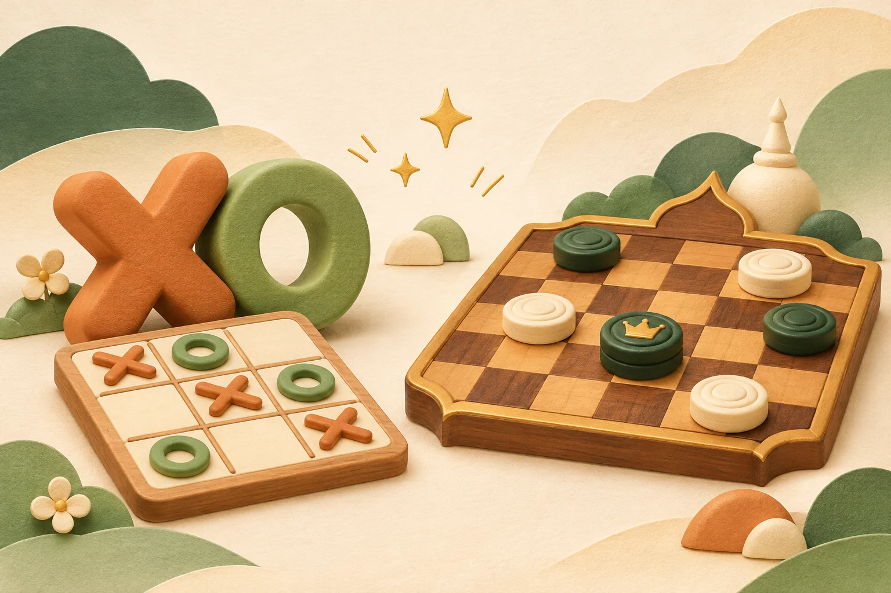

YOUR LITTLE PLAYGROUND
พักสักตา.
มาเล่นกัน!
เกมเล็ก ๆ ที่ทำให้เวลาของเราสนุกขึ้น
เลือกเกมที่ชอบ แล้วชวนเพื่อนเข้าห้องได้เลย

A LITTLE GAME. A GOOD TIME.WHAT SHALL WE PLAY?
วันนี้เล่นอะไรดี?
ระดับความยากเปลี่ยนได้ระหว่างเกม
คอมเดินแบบสบาย ๆ เหมาะสำหรับเริ่มฝึก
01 · YOUR NAME● เล่นพร้อมกันได้ 2 คนต่อห้อง
PICK YOUR ROOM
ห้อง XO
ชื่อผู้เล่นจะแสดงในห้อง A · B · C · อัปเดตทุก 4 วินาที
เปิดหน้าเกมค้างไว้ · ผู้ที่หลุดจะหายจากห้องภายใน 45 วินาที
เพื่อนขอเสมอ ยอมรับไหม?
วิธีเล่นหมากฮอสไทย
ฝ่ายละ 8 ตัว เล่นบนช่องเข้ม แตะหมากแล้วแตะช่องที่มีจุดเพื่อเดิน ฝ่ายดำเริ่มตาแรก และสลับผู้เริ่มในเกมถัดไป
- เบี้ยเดินและกินทแยงไปข้างหน้าเท่านั้น
- ถ้ามีกินต้องกิน เลือกทางใดก็ได้ ไม่บังคับกินมากที่สุด และต้องกินต่อด้วยตัวเดิมจนหมดทาง
- ถึงแถวสุดท้ายจะเข้าฮอสและจบตา ฮอสเดินทแยงไกลได้ทั้ง 4 ทิศ เวลากินต้องลงช่องถัดหลังตัวที่กินทันที
- หมดตัวหรือเดินไม่ได้คือแพ้ เสมอได้เมื่อทั้งสองฝ่ายยอมรับ
โหมดเล่นกับเพื่อน ไม่มีจับเวลาและไม่นับ 16 ตาอัตโนมัติ
อ้างอิงสมาคมกีฬากีฬาไทยฯ ↗เปิดหน้านี้ค้างไว้ระหว่างเล่น